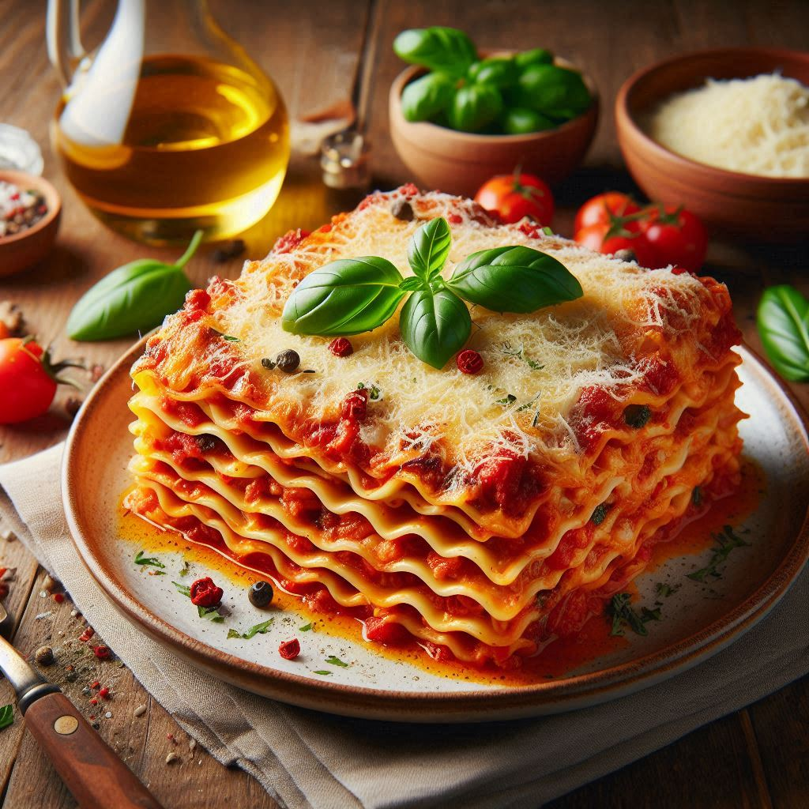

How to make Lasagna

Ingredients
- 500ml of squashed Tomatoes
- 200g of Onions
- 100g of Garlic
- 25g of mild Chilli
- 250g of Cheese(preferably Gouda or Cheddar)
- 500g of ground beef
- 500g of collezione
- Extra Spices like Salt, Pepper, Paprica etc.
Steps
- Prepare the sauce, heat up a stainless Steel Pan and put the squashed Tomatoes
in, dice the Onions, the Garlic and the Chilli and put them in the pan on low to high heat.
- Heat up a pot of water for 10 min with x2 the Water of the amount of Collezione, afterwards put the Collezione in
and cook them for 12 min. Strain the Pot afterwards and put them to the side
- Get another Pan on high heat and cook the ground beef till its ready.
- Now we prepare the Lasagna. Get an Oven form and stack the Ingredients. First we stack the Callezione then brush it with
the sauce and then sprinkle the ground beef over it. Repeat 3 Times and put it in the Oven for 45 min.
- Put the Form out of the Oven after 45 min and see if it is ready. If so congrats you just made your first Lasgna!.
Now enjoy it :).